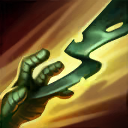

核心裝備
 熾灼之冠
熾灼之冠 黎安卓的折磨
黎安卓的折磨 雅瑪蘭守護像
雅瑪蘭守護像 深淵面具
深淵面具 荊棘之甲
荊棘之甲

以下為本站 7.2d 校正後的標準配置；實戰仍需依敵方陣容調整。


技能優先：E > Q > W
普攻會詛咒敵人，使其受到來自魔法傷害的一部分額外真實傷害；大絕也會對命中目標施加詛咒。

儲存最多兩層，向前投擲繃帶造成魔法傷害與暈眩，並把阿姆姆拉向目標。是主要 Gank 與開戰技能。
持續哭泣，對周圍敵人每秒造成固定值加最大生命比例的魔法傷害，可自由開關。
被動降低受到的普攻物理傷害；主動對周圍造成魔法傷害與短暫緩速，被普攻命中時會縮短冷卻。
用繃帶束縛周圍敵人，造成魔法傷害、施加詛咒並使其短時間無法移動或攻擊。
1技命中 → 開2技 → 3技 → 普攻上詛咒 → 第二次1技追擊
先用第一層繃帶貼近，開二技與三技持續輸出，第二層繃帶留給敵人的位移或閃現。
1技進場 → 2技 → 4技團控 → 3技 → 1技追核心
一技進場後立刻開大，避免敵人交位移；大絕結束後用第二層一技延長對關鍵目標的控制。
閃現進場 → 4技 → 2技 → 3技 → 1技追擊
敵方站位密集但一技角度不佳時，可直接閃現大絕保證多人控制，再用繃帶追擊逃離者。
二技持續傷害配合三技被普攻時縮短冷卻，使阿姆姆能快速完整清野。前期單挑較弱，優先避開強勢入侵；有隊友支援時再利用兩層一技連續控制。
五級後大絕是最穩定的範圍開戰工具。進場前先確認隊友能跟上，一技命中後開二技並使用大絕，之後保留第二層一技追擊逃跑核心。
站在前排尋找多人大絕，不一定要強行抓後排。若己方輸出容易被刺客切入，也可把大絕留作反開；被動詛咒能提高隊伍所有魔法傷害的真實傷害收益。
對局名單是本站依英雄機制與目前配置整理的參考，不等同固定勝率。
打野先維持標準刷野與節奏裝，只有敵方陣容或我方前排需求明顯時才調整。
觸發：敵方前排多，物件團與正面團戰會長時間卡在高生命目標上。
標準配置已經具備足夠打坦能力，維持核心即可。
觸發：敵方能在你進場或搶物件前快速把你秒掉。
蘭頓之兆提供高額物防並降低暴擊傷害。
自然之力在持續承受魔法技能後提供更高的魔法承傷能力。
觸發：進場或搶物件時經常被控制鏈直接中斷節奏。
改走水星之靴→鎖鏈軍靴，直接補韌性與魔防。
觸發：敵方前排、鬥士或吸血核心能在物件團長時間回復。
標準配置已經有重創，維持即可。
觸發：我方陣容沒有可靠第一承傷點，團戰需要有人更早進場吸收注意力。
你本來就是隊伍前排，維持標準坦裝並把資源用在正確抗性即可。
提醒：「缺前排」不代表所有打野都要改坦裝；刺客、法師與射手打野硬轉坦通常會失去英雄價值。
7.2a 打野正式版：技能名稱依 Riot Games 台灣《激鬥峽谷》阿姆姆英雄頁校正；出裝、符文、技能順序與清野方向交叉參考 WildRiftFire 7.2a，並納入 7.1b 技能調整。Tier 與對局為本站綜合評級。｜v53：完成打野第二批正式版，完整套用李星固定母版，補齊起手裝、核心三件、五件成裝、技能加點、三組連招、對局與前中後期節奏。
本站於 2026-08-27 依 Patch 7.2d 重新檢查此配置。 Tier、出裝、符文與對局屬於 Wild Rift Guide 的整理與分析，不是 Riot Games 官方推薦；版本改動後會再依官方公告與實戰資料校正。